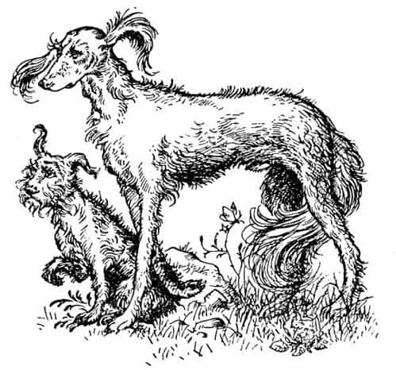
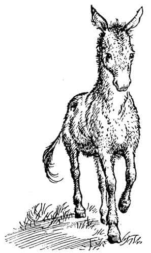
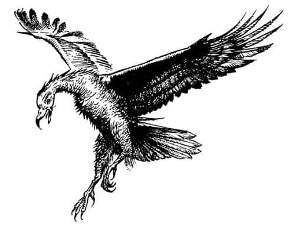

Yukarılara ve İçerilere
“Ey savaşçı Krallar ve ey güzellikleri evreni aydınlatan Bayanlar, şunu bilin ki” dedi Emeth, “ben, batıda, çölün ötesindeki Tehishbaan şehrinden Harpa Tarkaan’ın yedinci oğlu Emeth’im. Narnia’ya Rishda Tarkaan’ın kumandası altında yirmi dokuz kişiyle beraber geldim. Narnia’ya yürüyeceğimizi ilk öğrendiğimde dünyalar benim olmuştu; çünkü ülkeniz hakkında birçok şey duymuştum ve sizinle savaşta karşılaşmayı çok istiyordum. Ama tüccar kılığında (bir savaşçı ve Tarkaan’ın oğlu için utanç verici bir giysidir bu) gideceğimizi, yalan dolanla iş yapacağımızı öğrendiğimde sevincim kursağımda kaldı. Özellikle bir maymuna hizmet edeceğimizi duyduğumda ve Taş ile Aslan’ın aynı şey olduğu söylenmeye başladığında dünyam karardı. Çünkü çocukluğumdan beri hep Taş’a hizmet etmiştim; en büyük arzum onu daha fazla tanımak ve mümkünse yüzünü görebilmekti. Benim için Aslan nefretle aynı şeydi.
Bildiğiniz gibi, her gece saman çatılı harap kulübenin önüne çağrılıyorduk; ateş yakılıyor ve Maymun kulübeden pek iyi göremediğim dört ayaklı bir şey çıkarıyordu. İnsanlar ve hayvanlar eğilip selam vererek ona saygılarını belirtiyordu. Tarkaan’ın Maymun tarafından aldatıldığını düşünüyordum, çünkü ahırdan çıkan o şey ne Taş’tı, ne de başka bir Tanrı. Ancak Tarkaan’ın yüzünü görüp ağzından çıkanları duyduğumda fikrimi değiştirdim, çünkü Tarkaan’ın söylediklerine inanmadığını görmüştüm. Onun Taş’a inanmadığını anladım. İnansaydı onunla alay edemezdi.
Bunu anladığımda son derece öfkelendim; Taş’ın neden Maymun’u ve Tarkaan’ı cehennem ateşleriyle yakmadığını merak ediyordum. Yine de öfkemi gizleyip dilimi tuttum ve sonucu beklemeye başladım. Dün gece, bazılarınızın bildiği gibi, Maymun o sarı şeyi çıkarmadı ama Taşlan’ı - aynı şey olduğunu göstermek için iki ismi birbirine eklemişlerdi - görmeyi arzulayan herkesin harap kulübeye girebileceğini söyledi. Bunun da başka bir hile olduğunu düşündüm. Ama kedi girip de dehşetle dışarıya çıktığında kendi kendime, inançsızca ve bilmeyerek çağırdıkları gerçek Taş gelmiştir ve intikamını alacaktır dedim. Kalbim Taş’ın dehşeti ve büyüklüğü karşısında bir tavşanın kalbine dönüşmüştü, ama arzularım korkumdan çok daha güçlüydü ve dizlerimin titrememesi, dişlerimin takırdamaması için kendimi güçlü olmaya zorlayarak, ölüm pahasına da olsa Taş’ın yüzüne bakmaya karar verdim. Böylece o harap kulübeye girmek üzere öne çıktım ve Tarkaan, istememesine rağmen, bana izin verdi.
İlk şaşkınlığım kapıdan içeriye girer girmez kendimi (şimdi olduğumuz gibi) bu muhteşem gün ışığında bulmamdı; çünkü dışarıdan bakıldığında kulübenin içi kapkaranlıktı. Ama şaşıracak zaman yoktu, kellemi kurtarmak için adamlarımızdan biriyle savaşmaya zorlandım. Onu görür görmez, Maymun ve Tarkaan’ın onu oraya, içeriye girenlerden kendi sırlarına ortak olmayanları öldürmek üzere koyduklarını anladım. Bu adam da yalancı ve sahtekârdı, Taş’ın gerçek hizmetkârlarından değildi. Onunla kavga edecek güçlü bir iradem vardı ve onu öldürdükten sonra arkamdaki kapıdan dışarıya attım.
Sonra etrafıma bakındım; gökyüzünü, geniş toprakları gördüm, tatlı kokuları duydum. Tanrılar adına, burası çok hoş bir yer, diye düşündüm; Taş’ın ülkesine gelmiş olabilirdim. Sonra onu bulmak umuduyla bu garip ülkede yolculuğa başladım.
Böylece bir sürü çimenlik, çiçeklik alan geçtim. Nefis ağaçların arasından yürüdüm ve sonunda, iki kaya arasındaki dar bir yerden beni karşılamak üzere büyük bir Aslan çıktı. Bir devekuşu kadar hızlı, bir fil kadar büyüktü; kürkü saf altın gibiydi, gözlerindeki parlaklık sıvı altına benziyordu. Bir yandan Alev Dağı Lagour’dan çok daha korkunçtu, diğer yandan dünyanın tüm güzelliklerini geride bırakacak kadar; çöl kumlarında açmakta olan bir gülden bile daha güzeldi. Ayaklarına kapandım, bunun kesinlikle ölüm saati olduğunu, çünkü (tüm onurlara layık olan) Aslan’ın tüm yaşamım boyunca ona değil de Taş’a hizmet ettiğimi bildiğini düşünmeye başladım. Bununla birlikte Aslan’ı görüp de ölmek, dünyanın Tisrok’u olup Aslan’ı görmeden yaşamaktan daha iyidir. Muhteşem yaratık altın başını eğdi, alnıma diliyle dokundu ve ‘Hoş geldin oğlum’ dedi. ‘Lordum, ben senin oğlun değil, Taş’ın hizmetçisiyim’ dedim. O da, ‘Çocuk, Taş’a ettiğin tüm hizmetlerin bana yapıldığını farz ediyorum’ diye cevapladı. O an öğrenmek ve anlamak için öylesine büyük bir arzu duydum ki korkularımı yendim ve muhteşem yaratığa sorular sormaya başladım. ‘Öyleyse Maymun’un dediği doğru mu, sen ve Taş aynı kişi misiniz?’ diye sordum. Aslan öyle bir kükredi ki yerler sallandı (ama gazabı bana karşı değildi) ve, ‘Bu doğru değil’ dedi. ‘Aynı şey olduğumuz için değil karşıt şeyler olduğumuz için ona yaptığın hizmetleri kendime yapılmış kabul ediyorum. Ben ve o öylesine farklı şeyleriz ki, hiçbir kötü hizmet benim için, hiçbir iyi hizmet de onun için yapılamaz. Bu yüzden, herhangi biri Taş adına yemin eder ve sözünü sadece söz verdiği için yerine getirirse, kendisi bilmese bile, benim adıma yemin etmiştir ve onu mükâfatlandıran ben olurum. Herhangi biri benim adıma zalimlik ederse, Aslan’ın adını söylemesine rağmen hizmet ettiği Taş’tır ve yaptıkları onun tarafından kabul edilir. Anlıyor musun, Çocuk?’ ‘Lordum, ne kadar iyi anladığımı biliyorsun’ dedim. Ama aynı zamanda (gerçek buydu, söylemeye mecburdum) tüm yaşamım boyunca Taş’ı aradığımı da söyledim. ‘Sevgili oğlum’, dedi muhteşem yaratık, ‘arzun beni bulmak olmasaydı uzun süre sadakatle aramazdın. Çünkü herkes sadakatle aradığını bulur.’
Sonra üzerime soludu, kollarım ve bacaklarımdaki titremeyi durdurarak ayağa kalkmamı sağladı. Bundan sonra fazla bir şey söylemedi, ama tekrar görüşeceğimizi, yukarılara ve içerilere gitmem gerektiğini söyledi. Sonra bir altın yağmuru gibi arkasını döndü ve aniden kayboldu.
O zamandan beri, ey Krallar ve Bayanlar, onu bulmak için dolaşıyordum; mutluluğum öyle büyük ki derin bir yara almışım gibi güçsüzleştiriyor beni. Mucizeler mucizesi bana sevgili diye hitap etti, benim gibi köpekten başka bir şey olmayan—”

“Ha? Ne dedin?” dedi köpeklerden biri.
“Efendim” dedi Emeth. “Bu Calormen’de kullanılan bir deyim yalnızca.”
“Bunu pek beğendiğimi söyleyemeyeceğim” dedi köpek.
“Kötü bir şey söylemek istemiyor” dedi yaşlı bir köpek. “Biz de yavrularımız kabahat yaptığında onlara oğlan çocuğu diyoruz.”
“Evet öyle” dedi bir köpek. “Ya da kız çocuğu deriz.”
“Şşşşt!” dedi yaşlı köpek. “Bu hoş bir söz değil. Nerede olduğunuzu unutmayın.”
“Bakın!” dedi Jill, aniden. Birisi, ürkek adımlarla onlara doğru yaklaşıyordu; dört ayaklı zarif bir yaratıktı bu, kır renkliydi. Birkaç saniye ona baktıktan sonra beş ya da altısı hep birden, “Hey, bu bizim Şaşkaloz” dedi. Üzerinde aslan postu olmadan onu hiç gün ışığında görmemişlerdi; muhteşem görünüyordu. Yumuşak ve kır tüyleriyle güzel bir eşekti; öylesine nazik ve dürüst yüzlüydü ki, onu görseydiniz siz de Jill ve Lucy’nin yaptığını yapardınız - yani ileriye atılıp kollarınızı onun boynuna dolar, burnunu öper, kulaklarını okşardınız.

Ona nereden geldiğini sorduklarında, diğer yaratıklarla birlikte kapıdan girdiğini, ama - kimsenin, özellikle de Aslan’ın yoluna çıkmamaya dikkat ettiğini söyledi. Çünkü gerçek Aslan’ın orada olduğu düşüncesi, bir aslan postu içine girdiği için onu öylesine utandırmıştı ki, kimsenin yüzüne bakamayacağını düşünüyordu. Tüm dostlarının batıya doğru gittiğini gördüğünde, birkaç tutam ot yedikten sonra (“tüm yaşamım boyunca bundan daha güzel ot yememiştim” dedi) cesaretini toplamış ve onları takip etmişti. “Aslan’la karşılaşmak zorunda kalırsam ne yapacağımı bilmiyorum” diye ekledi.
“Onunla karşılaştığında her şeyin düzeldiğini göreceksin” dedi Kraliçe Lucy.
Sonra hep beraber ilerlediler. Sürekli batıya gidiyorlardı, çünkü Aslan, “Yukarılara ve içerilere” diye bağırdığında bu yönü kastettiğini düşünmüşlerdi. Birçok yaratık ağır ağır aynı yöne ilerliyordu, ama çimlik arazi öyle büyüktü ki, kalabalık görünmüyorlardı.
Henüz erkendi, havada sabah serinliği vardı. Sağı solu kolaçan etmek için sık sık duruyorlardı. Bunun nedeni, hem bulundukları yerin çok güzel olması, hem de nerede olduklarını anlayamamalarıydı.
“Peter” dedi Lucy, “sence neredeyiz?”
“Bilmiyorum” dedi Yüce Kral. “Bana bir yeri hatırlatıyor, ancak ismini bulamıyorum. Çok, çok küçükken tatil yaptığımız bir yer olabilir mi?”
“Çok harika bir tatil olmalı bu” dedi Eustace. “Bizim dünyamızda böyle bir ülke olmadığına bahse girerim. Renklere bakın! Dünyamızdaki dağlarda bu dağlardaki gibi bir mor bulamazsınız.”
“Burası Aslan’ın ülkesi değil mi?” dedi Tirian.
“Dünyanın Sonu’nun ötesindeki, o dağın tepesindeki ülkeye benzemiyor” dedi Jill, “ben oraya gitmiştim.”
“Bana sorarsanız” dedi Edmund, “Narnia ülkesinde bir yere benziyor. İlerideki şu tepelere ve onların arkasındaki buz kaplı dağlara bakın. Narnia’da gördüğümüz dağlara çok benziyorlar, hani çağlayanın ötesindeki dağlara.”
“Evet, benziyorlar” dedi Peter. “Ama bunlar daha büyük.”
“Narnia’dakilere benzediklerini sanmıyorum” dedi Lucy. “Şuraya bakın.” Sol tarafı, güneyi işaret etti ve herkes dönüp baktı. “O tepeler” dedi Lucy, “yani ormanlarla kaplı olanlar ve onların arkasındaki mavi renktekiler, Narnia’nın güney sınırlarındakilere benzemiyor mu?”
“Benzemek mi?” diye bağırdı Edmund, bir anlık sessizlikten sonra. “Evet, tıpa tıp benziyorlar. Bakın, çatal gibi tepesiyle Pire Dağı ve Archenland’e giden geçit, her şey orada!”
“Yine de tamamen aynı değiller” dedi Lucy. “Farklılar. Daha renkliler, hatırladığımdan daha uzaktalar ve daha… daha… ah, bilmiyorum…”
“Gerçeğe daha fazla benziyorlar” dedi Lord Digory yavaşça.
Aniden Kartal Keskingöz kanatlarını açtı, havada on on beş metre yükseldi, bir tur attı ve yere kondu.
“Krallar ve Kraliçeler” diye bağırdı, “hepimiz körmüşüz. Nerede olduğumuzu ancak şimdi fark etmeye başladık. Yukarıdan her şeyi gördüm - Yüksek Ova, Kunduzbarajı, Büyük Nehir ve Doğu Denizi’nin kenarında hâlâ parıldayan Cair Paravel. Narnia ölmemiş. Burası Narnia.”

“Bu nasıl olur?” dedi Peter. “Aslan biz yaşlı olanların Narnia’ya asla geri dönemeyeceğini söylemişti, ama buradayız işte.”
“Evet” dedi Eustace. “Yok oluşunu, güneşin söndüğünü gördük.”
“Her şey o kadar farklı ki” dedi Lucy.
“Kartal haklı” dedi Lord Digory. “Dinle Peter. Aslan Narnia’ya asla geri dönmeyeceğini söylediğinde, senin aklındaki Narnia’yı kastediyordu. Oysa o gerçek Narnia değildi. Onun bir başlangıcı ve bir sonu vardı. Orası her zaman burada olan ve hep burada kalacak olan gerçek Narnia’nın sadece bir gölgesi, bir kopyasıydı; aynı bizim dünyamızın ve İngiltere’nin, aslında her şeyin, Aslan’ın gerçek dünyasındaki bir şeyin gölgesi ya da kopyası olduğu gibi. Narnia için yas tutmana gerek yok Lucy. Eski Narnia’da önemli olan her şey, tüm sevgili yaratıklar kapıdan geçti. Burası kuşkusuz farklı; tıpkı rüyanın gerçek hayattan farklı olması gibi gerçek de gölgesinden farklı.” Bu sözleri söylerken herkes heyecanlanmıştı; ama kendi kendine, “Platon her şeyi yazmış, her şeyi; aman Tanrım, bu okullarda bunlara ne öğretiyorlar böyle?” dediğinde yaşlı olanlar gülmüştü. Lord Digory’nin bu söyledikleri, uzun bir zaman önce sakalının altın rengi değil de kır olduğu diğer dünyada ağzından çıkan sözlerin tıpatıp aynısıydı. Neden güldüklerini anlamış, kendisi de gülmeye başlamıştı. Çabucak duruldular, çünkü bildiğiniz gibi, ciddileşmenize neden olacak bir mutluluk ve şaşkınlık türü vardır ve bu, şakalarla geçiştirilemeyecek kadar güzeldir.
Size bu güneşli Narnia’nın eski Narnia’dan farkını anlatmak, bu ülkenin meyvelerinin tadını anlatmak kadar zor. Şöyle düşünürseniz belki bir fikir edinebilirsiniz; güzel bir körfeze ya da dağlar arasında uzanan yeşil bir vadiye bakan bir penceresi olan bir odada bulunduğunuzu ve pencerenin karşısındaki duvarda bir ayna olduğunu farz edin. Aniden o körfezin ya da vadinin görüntüsünü aynada yakaladığınızı düşünün. Aynadaki deniz ya da vadi aynı gerçeği gibidir; ama aynı zamanda biraz farklıdır, daha derin, daha harikadır ve hikâyelerdeki - hiç duymadığınız ama öğrenmek istediğiniz hikâyelerdeki - yerlere benzer. Eski Narnia ile yeni Narnia arasındaki fark böyleydi. Yenisi daha derin anlamlar barındıran bir ülkeydi: Her taş, çiçek ve yaprak sanki daha fazlasını söylemek istiyordu. Bundan daha iyi açıklayamam; eğer oraya giderseniz ne demek istediğimi anlarsınız.
Herkesin hissettiklerini dile getiren kişi Tekboynuz oldu. Sağ ön ayağını yere vurdu, kişnedi ve sonra da bağırdı:
“Sonunda eve döndüm! Burası benim gerçek ülkem! Ben buraya aitim. Şimdiye kadar bilmiyordum, ama burası tüm yaşamım boyunca aradığım topraklar. Eski Narnia’yı sevmemizin nedeni bazen burası gibi görünmesidir. İihii-hiii-hiii! Yukarılara çıkın, içerilere gelin!”
Yelesini sallayıp ileriye atılarak dörtnala koşmaya başladı - dünyamızda, bir anda gözden kaybolacak kadar hızlı bir koşuştu bu. Ama çok garip bir şey oldu. Diğerleri de koşmaya başlamıştı, şaşkınlıklarına rağmen onunla aynı hızda koşabiliyorlardı. Sadece köpekler ve insanlar değil, küçük şişko Şaşkaloz ve kısa bacaklı Cüce Zıpır bile uçar gibi gidiyordu. Hava, ön camı olmayan bir arabada son hızla gidiyorlarmış gibi yüzlerine vuruyordu. Arazi, sanki bir trenin penceresinden bakıyorlarmış gibi kayıp gidiyordu altlarında. Giderek hızlandılar, kimse yorulmamış, terlememiş, nefessiz kalmamıştı.